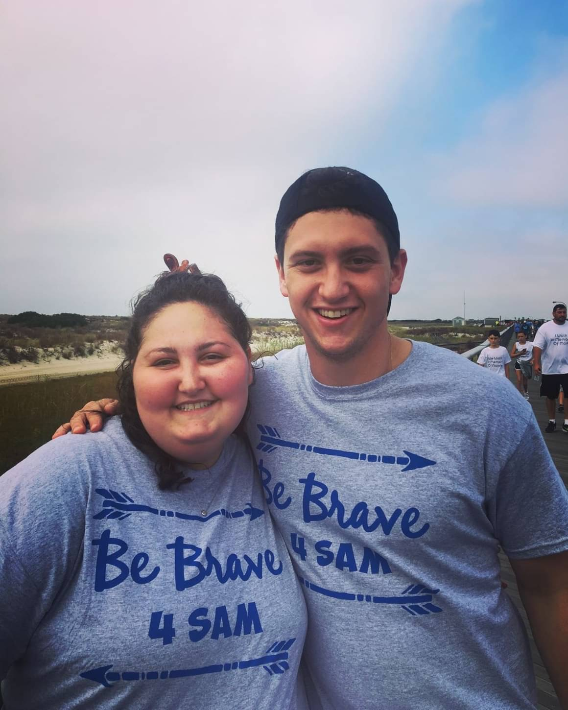
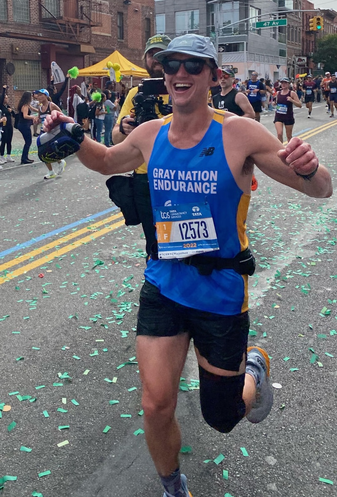

Dan's Road to the NYC Marathon
TCS NYC Marathon · Sunday, November 1, 2026 · based on the Kopf Running Program #2
GRAY NATION ENDURANCE
📅 This Week
🗓️ Full Plan
📈 Progress
🖨️ Export PDF
Log Run
Completed ✓
Run Time
mm:ss or h:mm:ss
Distance (miles)
Pace:
—
Pace (min/mile) — auto-calculated, edit to override
Notes
Clear
Cancel
Save
Every mile for Sam 🤍
🎉
Let's go! 🎉
🖨️ Export PDF
Choose what to print (black & white friendly)
This week + next
Full 20-week plan
Cancel